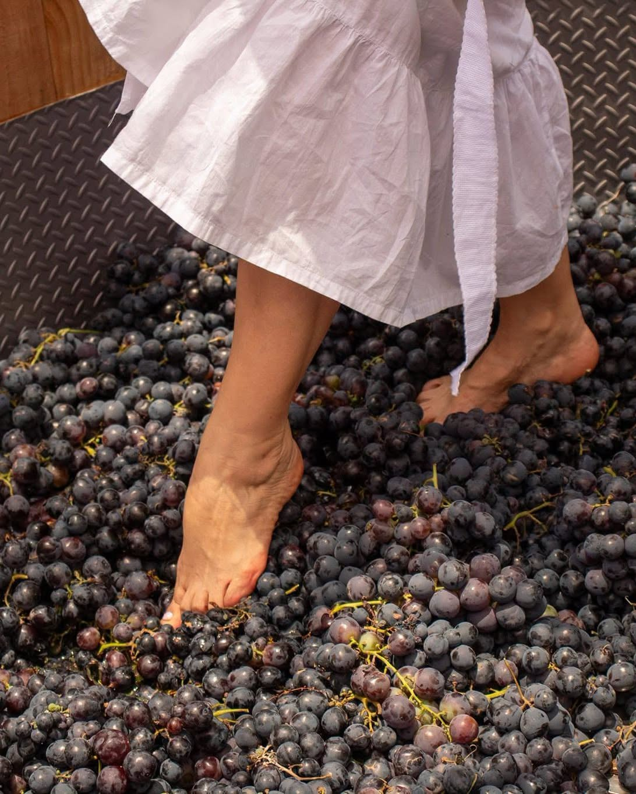
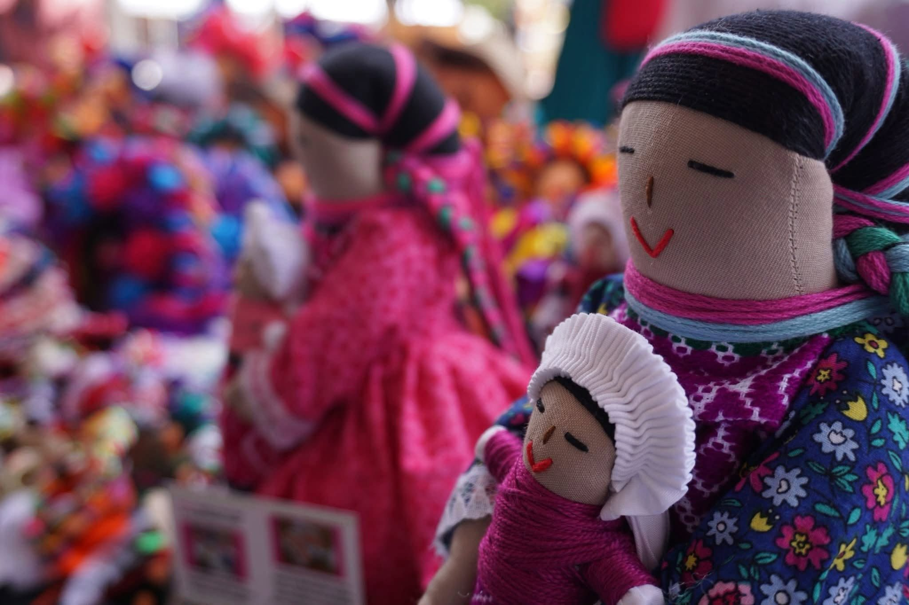

Cultura, arte, vino y artesanía en Villa Progreso — dos días para celebrar la cosecha.
CAVA reúne a productores, artesanos y músicos de Villa Progreso en un mismo recorrido: comienza con un ritual de agradecimiento por la cosecha y cierra con dos noches de música en vivo, gastronomía tradicional y stands de artesanía local.
Ceremonia religiosa en el atrio de la iglesia.
Agradecimiento a la Madre Tierra por la cosecha de la uva (Bothë), con Médicos Tradicionales de Villa Progreso. Atrio de la iglesia.
Corte de listón y recorrido por los stands de productores y artesanos, con banda de viento local. Parque Ecoturístico La Canoa.
Agrupación musical.
Cuadros del folklore mexicano.
Música electrónica.
Presentación artística.
Inauguración protocolaria con autoridades municipales, estatales y delegacionales.
Concurso de cocina tradicional sobre el mole.
Agrupación musical de mariachi.
Agrupación de ritmos latinos.
Música electrónica.
Carrera de 5k. 100 playeras y 100 medallas.
Actividad comercial en los corredores de ixtle y el pabellón gastronómico: gorditas de maíz quebrado, nopales y más.
Activación física.
Grupo representativo de la Casa Municipal de Cultura.
Grupo de Astro-Rock.
Música jazz y pop.
Mensaje de cierre por parte del Comité Organizador y Autoridades.
Recorre los corredores de ixtle y el pabellón gastronómico: muñecas tradicionales, textiles y dulces regionales elaborados por productores de la comunidad.

Villa Progreso, Ezequiel Montes, Querétaro.
Sábado 22 y domingo 23
Parque Ecoturístico La Canoa